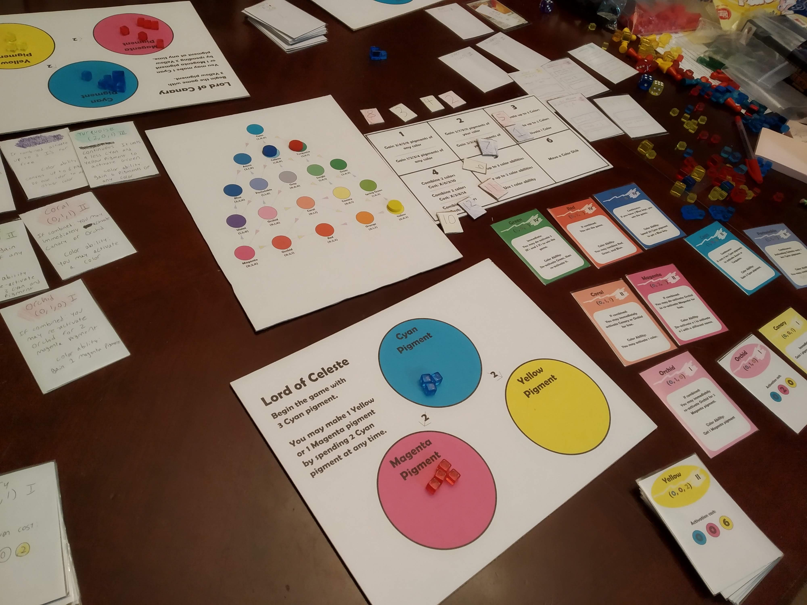

Lord of Colors PnP
February 23, 2019
A 3 player auction/engine builder game about making colors.
Files and links:
Lord of Colors Rulebook
Lord of Colors PNP Sorry about the 6 card layout for the cards.
Post on BGG
Dev Notes:
I made this game all the way back in 2019. I think I was really onto something with the color mixing mechanic as well as the color board, and even today I still try to think of ways to reincorporate those mechanics into a new game. While I do enjoy Lord of Colors, I also got comments and agree that the game is bloated. By that, I mean that it contains so many different mechanics just to include them, that the core of the game (mixing colors and using the color board) gets obscured. It's something I've been working on getting better at, and I think my later designs definitely do a better job of focusing in on a few core mechanics rather than a mishmash of many different ideas. Still, if you are looking to try a unique color-mixing mechanic, this game still holds up.
3 player game:

Lots of stuff going on!
Change Log:
February 13, 2022: Cleaned up this page.
February 23, 2019: This page is published.